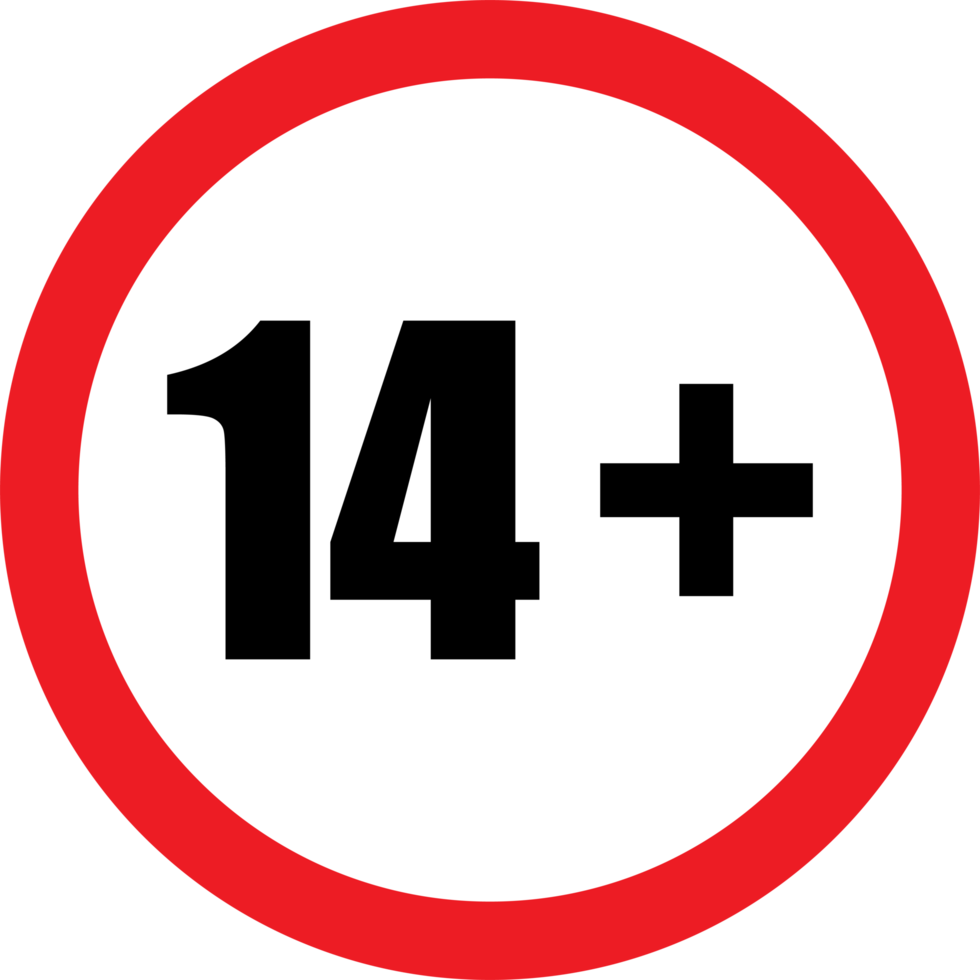
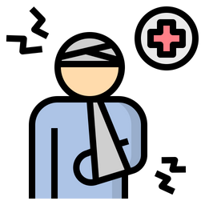

본 소프트웨어는 정보통신망 이용촉진 및 정보보호 등에 관한 법률, 청소년 보호법,
및 관련 법률의 규정에 따라 만 14세 미만의 사용자는 이용할 수 없습니다.
본 소프트웨어는 윤리적 해킹 및 사이버 보안 교육 목적에 한해 제공되며, 이를 악용할 경우 법적 책임이 따를 수 있습니다.
This software is not available for use by individuals under the age of 14.
This software is provided solely for ethical hacking and cybersecurity education. Misuse may result in legal consequences.
본 소프트웨어는 교육 목적으로만 제작되었습니다.
이를 불법적인 행위에 사용하는 경우, 해당 국가의 법률 및 부다페스트 사이버범죄 협약 등 국제법에 따라 엄중한 처벌을 받을 수 있습니다.
This software is intended for educational purposes only.
Any illegal use may result in severe consequences under national and international law, including the Budapest Convention on Cybercrime.

해당 툴의 오용으로 발생한 모든 피해는 사용자 본인의 책임이며, PX4T9 제작진은 이에 대해 책임을 지지 않습니다.
All damages caused by misuse of this tool are solely the user's responsibility, and PX4T9 developers accept no liability.